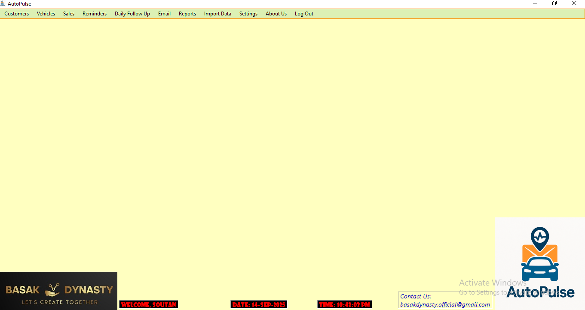

AutoPulse – Client Reminder System
AutoPulse is a desktop application designed to automate client reminders through SMS and email. It helps businesses ensure timely follow-ups for payments, subscriptions, and renewals without manual effort.
Features
- Automated reminders for due payments and renewals
- Customizable SMS and email templates
- Client database with contact management
- Scheduling system with recurring reminders
- Reports and reminder history logs
Screenshots

Technologies Used
VB.NET, Windows Forms, MS SQL Server, SMTP, (Previously created on Google Sheets and Google Forms based Sysytem using Apps Script)
Challenges & Learnings
Faced challenges with integrating third-party email gateways and handling failed deliveries. Learned how to implement retry mechanisms, improve exception handling, and securely store client communication data.